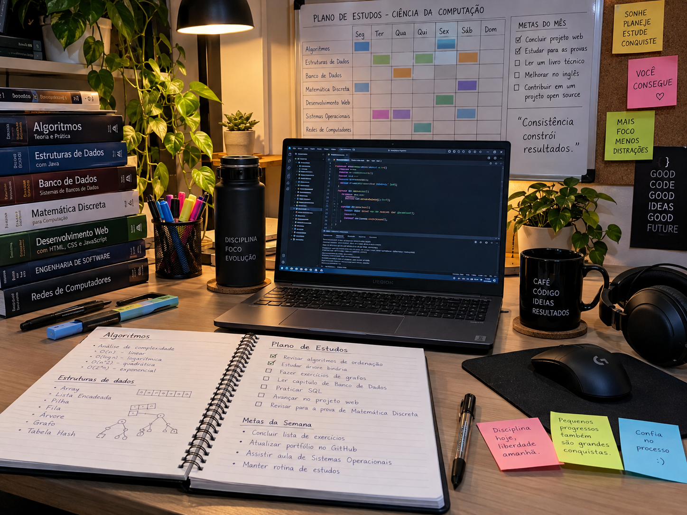

Material em destaque
Programação
Conteúdos importantes
- Lógica de programação
- Algoritmos
- Estruturas de dados
- Programação Web
- Banco de Dados
Para aprender programação, é importante combinar teoria com prática.
Matemática para Computação
Algumas disciplinas exigem bastante raciocínio matemático. Entre elas estão:
- Matemática Discreta
- Cálculo
- Álgebra
- Lógica
Como estudar matemática?
Leia a teoria, acompanhe exemplos e resolva exercícios. A prática ajuda a identificar quais partes do conteúdo ainda precisam de revisão.
Áudio de apoio
Abaixo há um audio para relaxare e tirar ansiedade
Checklist de revisão
- Revisar anotações das aulas.
- Resolver exercícios anteriores.
- Praticar programação.
- Separar conteúdos com dificuldade.
- Atualizar o cronograma de estudos.
Material recomendado para a semana
| Área | Material | Objetivo |
|---|---|---|
| Programação | Exercícios de lógica | Treinar raciocínio |
| Banco de Dados | Exercícios de SQL | Praticar consultas |
| Web | Projeto HTML | Praticar estrutura semântica |